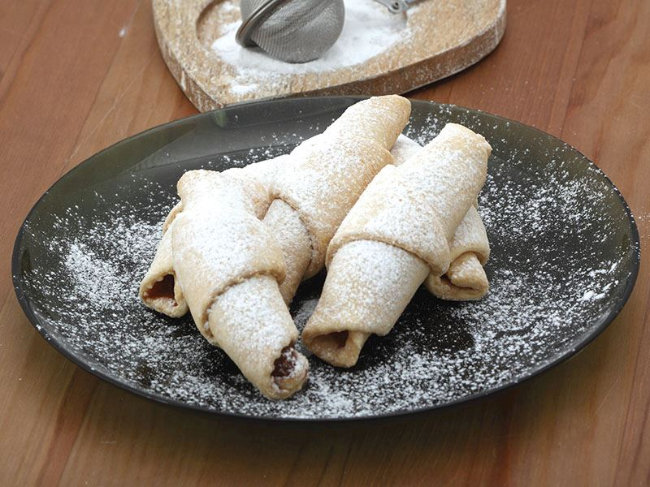

Elmalı Kurabiye Tarifi:
Malzemeler:
- 3 su bardağı un
- 250 gram oda ısısında tereyağı veya margarin
- 1 yemek kaşığı yoğurt
- 1 çay kaşığı kabartma tozu
- 1 limon kabuğu rendesi (isteğe bağlı)
- 1 kahve fincanı pudra şekeri
İç Malzemeler:
- 3 elma orta boy elma rendesi
- 1 tatlı kaşığı tarçın
- 1 küçük boy çay bardağı şeker
Yapılışı:
- Rendelenen elma, tarçın ve şeker küçük bir tencereye alınıp orta ateşte elmalar suyunu salıp çekene kadar pişirilir ve soğumaya bırakılır.
- Soğuyunca istenirse ceviz de konulur.
- Ayrı bir yoğurma kabında un hariç hamur malzemelerini alarak elimizle güzelce karıştıralım.
- Ardından yavaş yavaş un ilavesiyle birlikte ele yapışmayacak yumuşak bir kıvamda yoğrulur. Unu çok fazla ekleyerek hamurunuzu sertleştirmemelisiniz.
- Yoğrulan hamur tezgaha alınarak eşit 5 bezeye ayrılır. Bezeler avuç içerisinde yuvarlanır.
- Bezelerden biri tezgaha alınır. Altı üstü unlanarak tatlı tabağı büyüklüğünde, yarım cm kalınlığında olacak şekilde açılır.
- Açılan hamur önce dörde, her bir parça da 2 ye bölünür. (Yani toplam 8 üçgen çıkacak).
- Geniş kısımlarına soğuyan elma harcından 1 tatlı kaşığı koyularak, sigara böreği sarar gibi sarılır. Her beze için aynı işlem sırasıyla uygulanır.
- Şekil verilen kurabiyeler pişirme kağıdı serili tepsiye dizilir.
- Önceden ısıtılmış 170 derece fırında 20 dakika kadar pişirilir.
- Kurabiyelerin altı hafif kızardığı anda fırından alınır.
- Elmalı kurabiyeler ılınınca üzerine pudra şekeri serpilir ve servis edilir.
Afiyet Olsun.